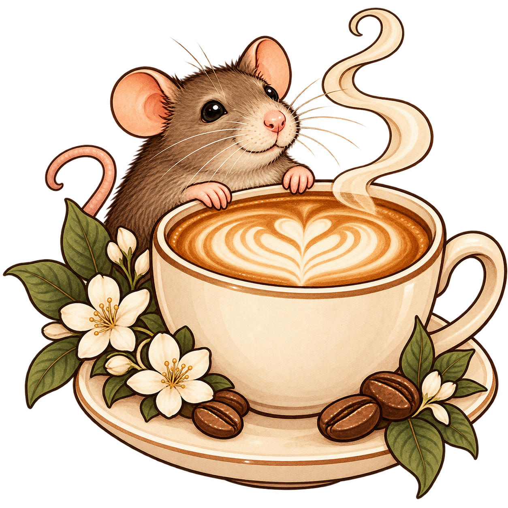
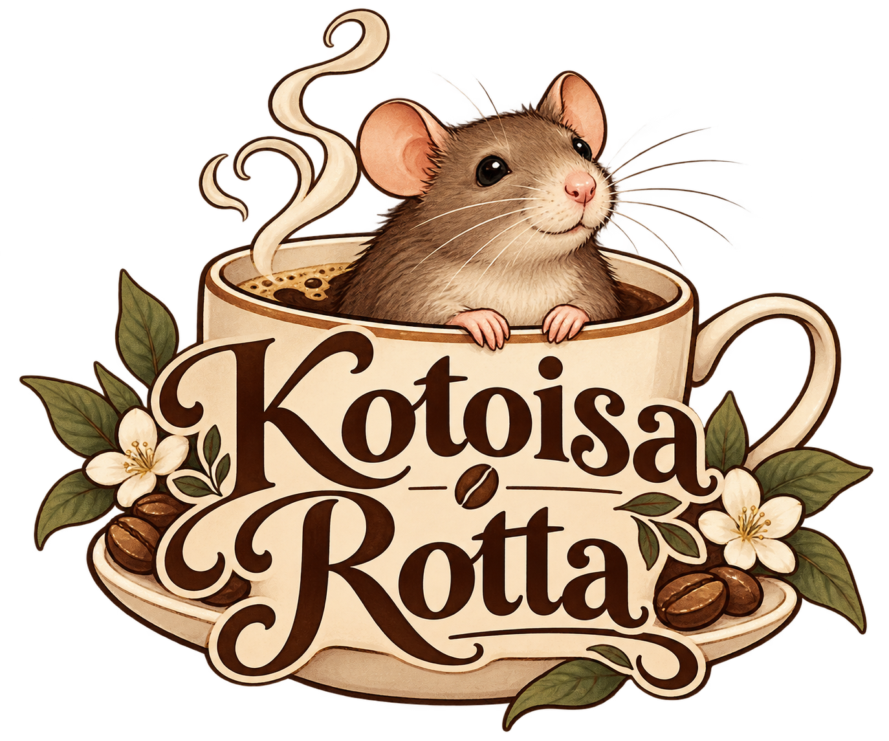
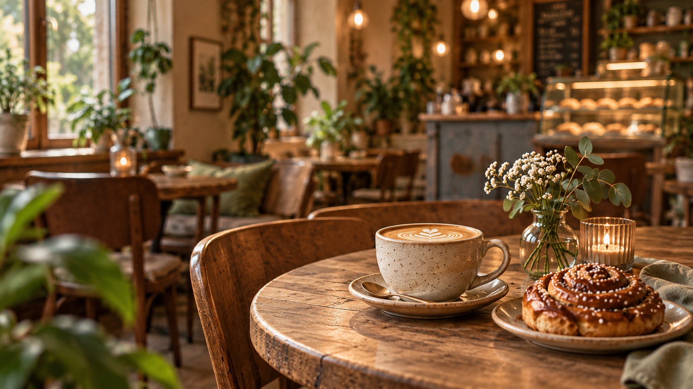
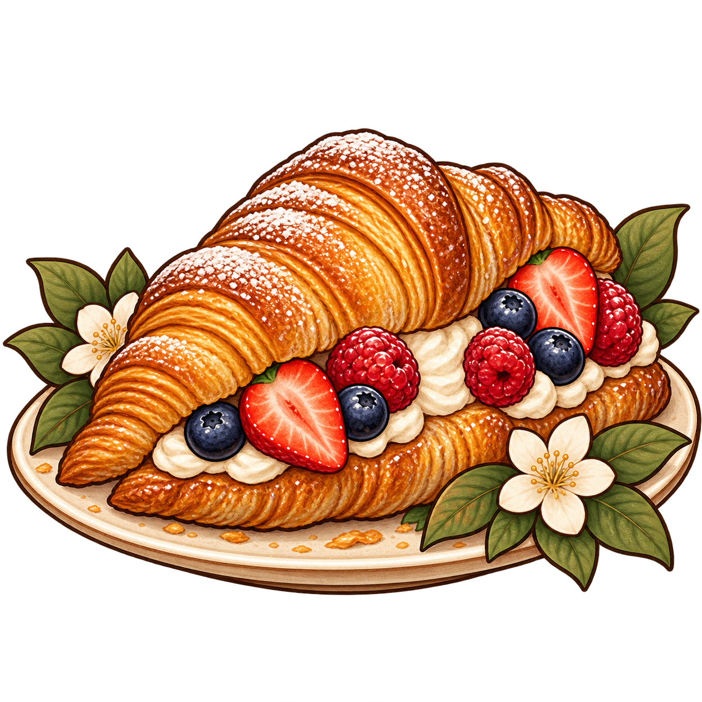
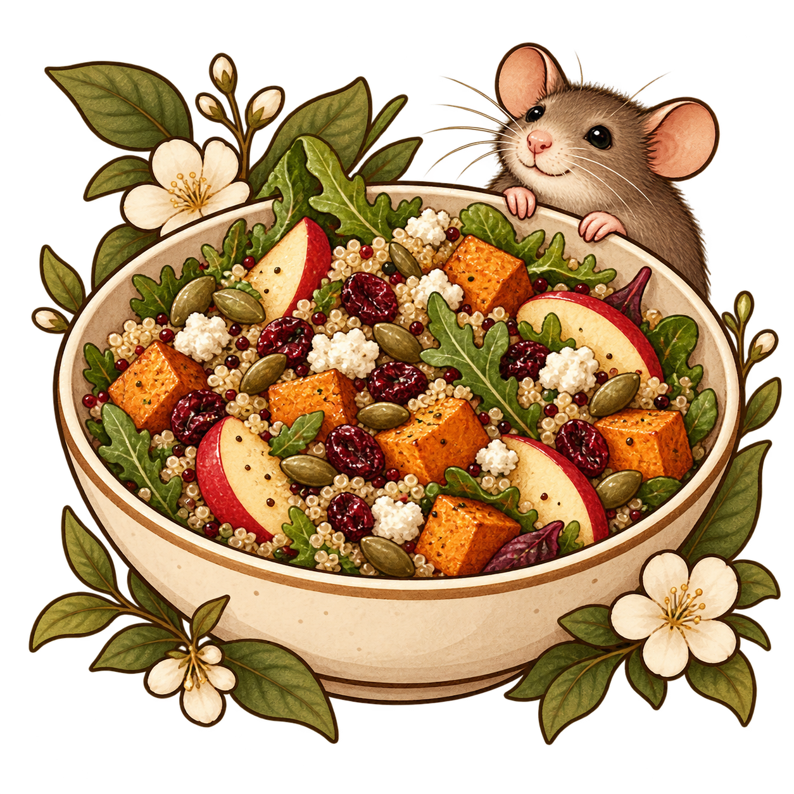
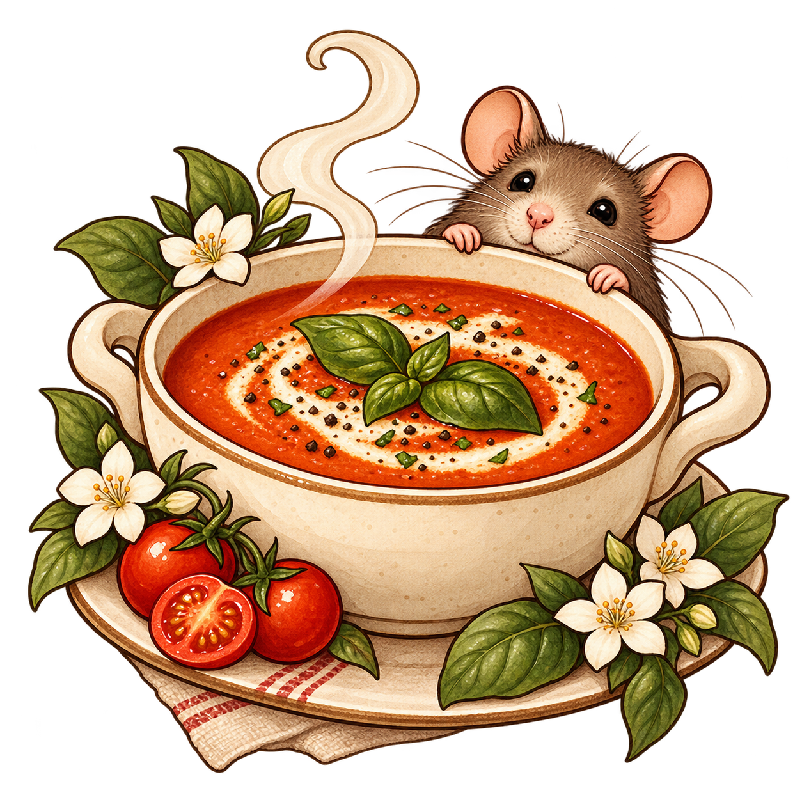

Latte
Tuoretta kahvia ja kuumaa maitoa. Täydellinen yhdistelmä.


Pieni hengähdyshetki arjen keskellä. Meiltä löydät tuoretta kahvia, herkullisia leivonnaisia ja suolaisia herkkuja. Tule nauttimaan rennosta tunnelmasta!
Katso menu →
Tuoretta kahvia ja kuumaa maitoa. Täydellinen yhdistelmä.

Makea, Rapea ja herkullinen croissant, joka sulattaa suussa.

Ruokaisa, mutta keevyt salaatti josta ei makua puutu.

Paistettu tomaattikeitto, joka on täynnä maistuvaa ja terveellistä ruokaa.